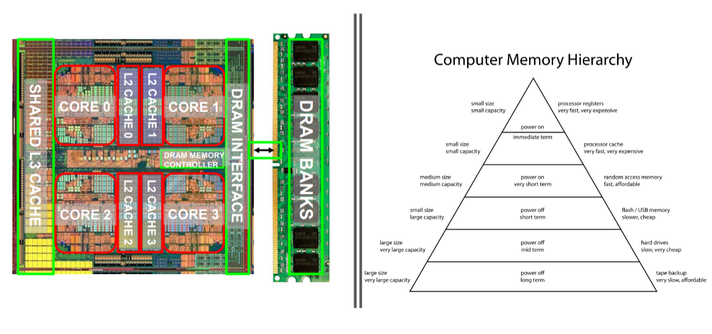

Small assignment on Canvas, Binary - Hex numbers and some signed integers. Number bases in general it seems.
Memory heirarchy was one of the great ideas of Computer Architecture(?). The goal for memory is for it to be:
Memory becomes a bottleneck with speed - If we cant access data at the speed we can process it, we have to wait for data to be transferred
We need memory to be reliable and durable - Over time, memory will degrade due to hundreds of thousands of writes to itself. We want memory to be more durable and realiable to combat this.
Memory is a major cost of computing - 1Gb of memory cost £5000 in J.P. Morrison's memory of past computing prices
Due to memory becoming so cheap, many programmers are lazy and write code without the reservations and thoughtfulness of past programmers.
A stored value represented by a capacitor's charge state
A capacitor is like a small bucket, but it leaks. Not good for storing data :(
The charge leaks unless the capacitor's charge is refreshed. This refreshing is performed by CPU or by a dedicated memory controller
SRAM uses Two cross-coupled inverters to store a single bit
SRAM is faster but more expensive (Therefore used for cache)
Benefit of SRAM is that it doesnt need to be refreshed, which makes it faster
An ideal computer would have...
However

A memory address is a binary number. The number of bits needed to specify that number determines the max size of the memory.
Each location can store several bits. Nearly all computers have a standardized size of 8 bits per location, called a Byte
Bytes stored in memory are groups into words of a chosen size. A 32-bit word (4 bytes); 64-bit word (8 bytes); etc
Most instructions operate on entire words, for example, two words may be added together.
In modern computers, bytes are generally grouped into 4-byte or 8-byte words and instructions manipulate an entire word as a single entity.
The number of bits in a word is called the word length